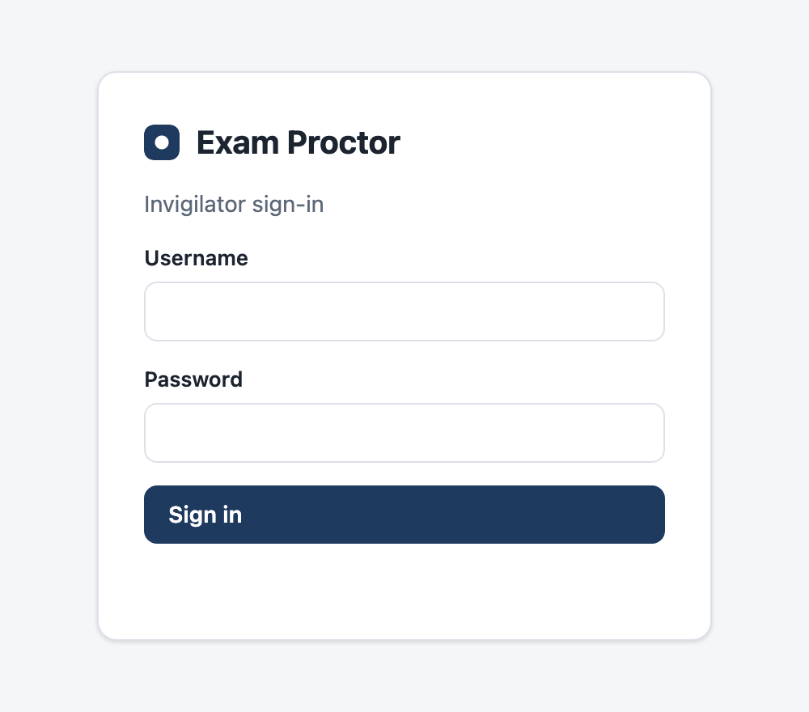
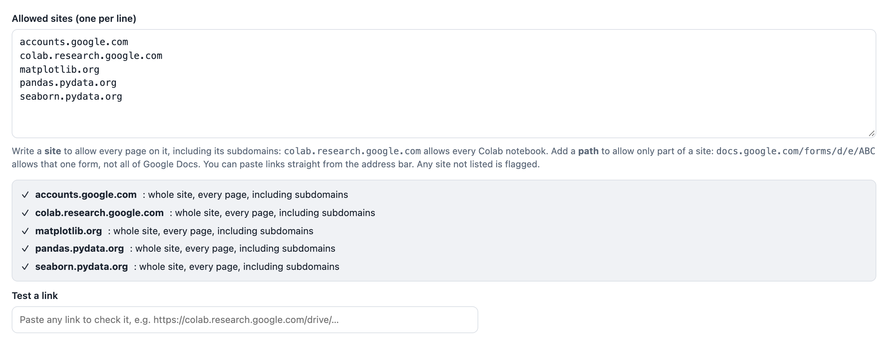
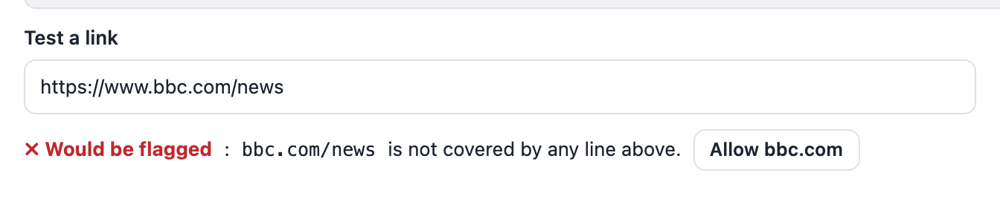
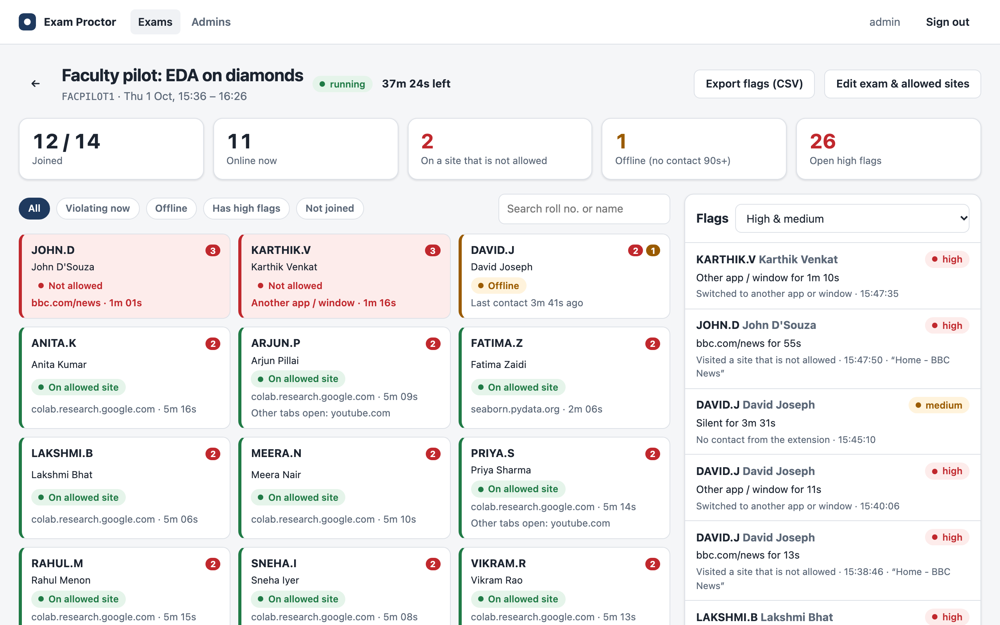
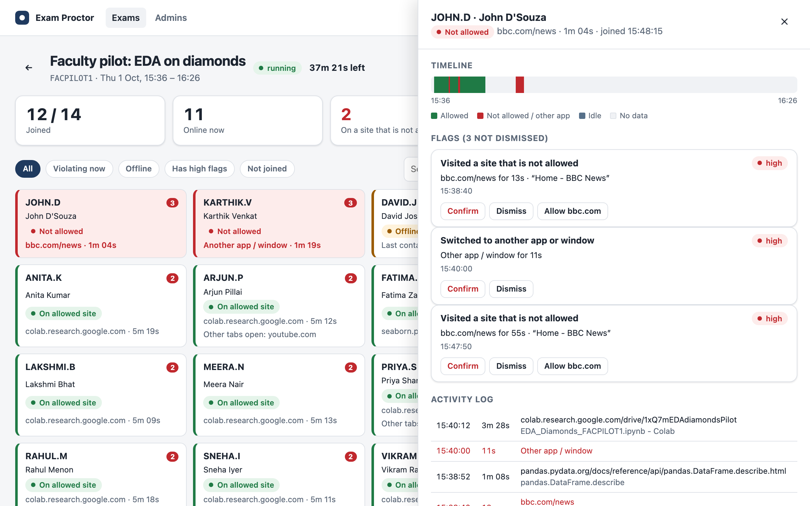
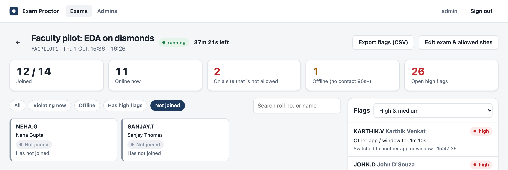

Exam Proctor: Invigilator Guide
Faculty pilot · Monday 5 October 2026 · 11:30 to 12:30 · Old IQAC
As an invigilator you watch every participant on one live screen, see within seconds who has left the allowed sites, and review each flag afterwards. No technical knowledge is needed: this guide covers everything in about 10 minutes of reading.
| Dashboard | https://exam-proctor-rhbo.onrender.com/dashboard, in any browser, on a laptop, tablet or phone |
| Your login | Created for you by the organiser (Nikhil D Jonathan). Change the password after your first sign-in: Admins → Change my password |
| Pilot exam | Faculty pilot: EDA on diamonds, code FACPILOT1, monitored 11:30 to 12:20 |
| Participants | Up to 40 faculty, each using their XIME email name as roll number |
| Arrive | 11:00, to set up and help participants join |
| Level | Raised when |
|---|---|
| high | A site that is not allowed for more than 3 seconds; another app in front; the extension removed during the exam |
| medium | No contact from the extension for 90 seconds (browser closed, extension switched off, or Wi-Fi lost); a Chrome settings page; screen locked; rejoining from another browser |
| low | A background tab open on a site that is not allowed; a gap that was only a network drop |

exam-proctor-rhbo.onrender.com/dashboard.The organiser creates the exam before Monday with + New exam. Other invigilators can check the settings with Edit exam & allowed sites, but should not change them.
| Field | Value |
|---|---|
| Exam name | Faculty pilot: EDA on diamonds |
| Exam code | FACPILOT1 |
| Starts / Ends | 5 Oct 2026, 11:30 / 5 Oct 2026, 12:20 |
| Exam PIN | A new 6-digit number, shown only at 11:20 |
| Grace period | 3 seconds |
| Flag leaving Chrome | On |
| Allowed sites | colab.research.google.com, accounts.google.com, pandas.pydata.org, seaborn.pydata.org, matplotlib.org (one per line) |
| Class roster | Optional: one line per confirmed participant, emailname,Full Name |

Before the exam, paste a few links into Test a link, such as a Colab notebook, a pandas documentation page and bbc.com/news, and check each result. A link that would be flagged has an Allow button next to it:

| Time | What to do |
|---|---|
| 11:00 | Sign in to the dashboard on the room's laptop and projector, and on your own device. Open the exam's live view (click the exam in the list). |
| 11:15 | Welcome participants. Check each has Chrome and the stopwatch icon pinned. Hand out the printed question papers face down. |
| 11:20 | Show the PIN on the projector. Watch Joined X / Y rise; use the Not joined filter to find anyone who needs help. |
| 11:30 to 11:37 | Part A, system check: announce each step at its time (Appendix). Expect red tiles: they are deliberate. |
| 11:38 | Part B: "Turn over your question papers. Open colab.research.google.com and begin." |
| 11:38 to 12:15 | Watch for red tiles. If many participants are flagged on the same site, it may be a site the exam needs (section 7). |
| 12:15 | "Please stop working." Keep the live view open until 12:20. |
| 12:20 | Show the feedback form link. Lead a 10-minute discussion. |
| 12:35 | After the 15-minute upload buffer: review flags and export the CSV (section 8). |

| Part of the screen | What it tells you |
|---|---|
| Header | Exam name, status (scheduled, running or finished) and the time left |
| Five numbers | Joined out of the roster; online now; on a site that is not allowed right now; offline for 90 seconds or more; open high flags |
| Filter buttons and search | Show only those violating now, offline, with high flags, or not yet joined; search by roll number or name |
| Tiles | One per participant, sorted with problems first. Green: on an allowed site. Red: on a site that is not allowed, or in another app, with how long. Amber: offline. Grey: not joined. The red and amber numbers are the participant's high and medium flags |
| Flags panel (right) | Every new flag as it happens, newest first. A pop-up message also appears for each new high flag |
The screen refreshes itself every 3 seconds; there is no need to reload the page.

| You see | What to do |
|---|---|
| One red tile, an unfamiliar site | Note it. Review it after the exam; don't interrupt the participant during the pilot. |
| Many red tiles on the same site at once | The exam probably needs that site (for example a sign-in page). Check the address, then use Allow <site> on one flag. |
| An amber (offline) tile | Their Wi-Fi dropped or Chrome closed. Check on them quietly. If it was only Wi-Fi, the flag drops to low on its own when they reconnect. |
| Grey (not joined) after 11:30 | Help them join: code FACPILOT1, email name, PIN. They can join at any time before 12:20. |
| "Cannot reach the exam server" for many people | Check the room's Wi-Fi, then open the dashboard. If the dashboard also fails, note the time; the extensions keep recording and send everything when the server returns. |
| "Extension removed" flag | Ask the participant to reinstall it from the store and rejoin with the same details. Rejoining after a reinstall also adds a medium "rejoined from a different browser" flag; that is expected. |
The organiser deletes the pilot exam, and with it all pilot records, within 30 days.
Announce each step at its time. For each participant you should see exactly these flags; if one is missing, or an extra one appears, write down the roll number and time.
| Time | Participants do | Expected on the dashboard |
|---|---|---|
| 11:30 | Open pandas.pydata.org and click around | Tile green. No flag |
| 11:32 | Open bbc.com/news in a new tab, wait 10 seconds, close it | Tile red for about 10 seconds; one high "Visited a site that is not allowed: bbc.com/news" |
| 11:33 | Switch to another app for 10 seconds, then back | Tile red; one high "Switched to another app or window" |
| 11:34 to 11:37 | Open youtube.com in a new tab, go back to pandas, close YouTube at 11:37 | Tile stays green with "Other tabs open: youtube.com"; one low "Has a tab open on a site that is not allowed" |
| 11:38 to 12:15 | The EDA questions in Colab and the documentation sites | Ideally no new flags. A low "tab open" flag means they left another tab open from before (for example email) |
